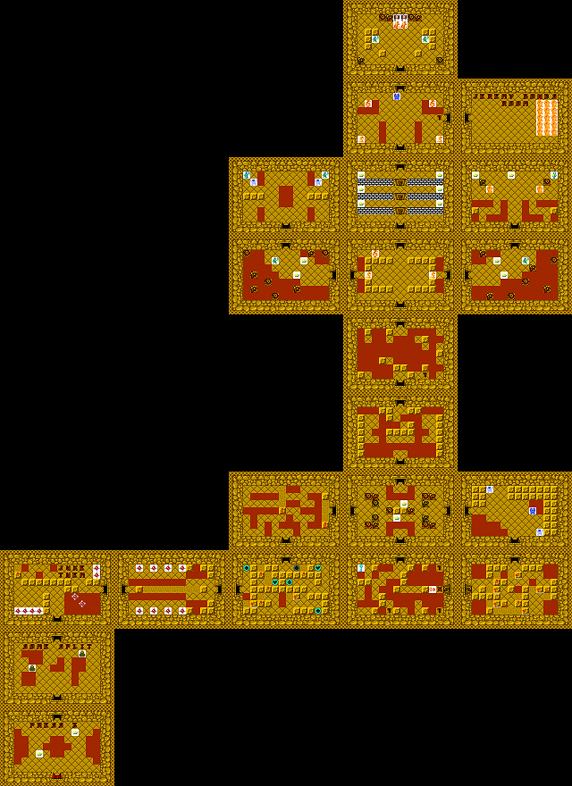

This is one of the levels I am currently most proud of. It was made in the Portal 2 level editor for class. I am especially proud of how many people I got "stuck" when playtesting, when in reality the solution was inches away from the player.
I thought I made excellent use of the light bridges that can go through portals, and thought I used that mechanic specifically in interesting and fun ways.

This is a level for a 2D puzzle game that was similar to the original Legend of Zelda. There were many similar features to use, like the grapple shot and a sword.
I was consistently complimented on my grappler puzzles, and while I think my combat sections could have been stronger, I am proud of the thought that I put into the puzzles in this level.